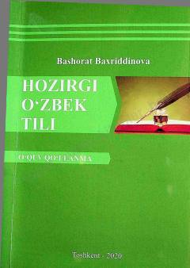

HOFilologiya yo‘nalishi talabalari uchun o‘zbek tili morfologiyasi va sintaksisi bo‘yicha amaliy qo‘llanma.
Ushbu o‘quv qo‘llanma filologiya yo‘nalishi talabalari uchun mo‘ljallangan bo‘lib, hozirgi o‘zbek tilining morfologiya va sintaksis bo‘limlari bo‘yicha amaliy hamda seminar mashg‘ulotlarini o‘z ichiga oladi. Kitob nazariy bilimlarni amaliyotda qo‘llash, mustaqil ta’lim topshiriqlarini bajarish va kurs ishlarini tayyorlashda yordam beradi.